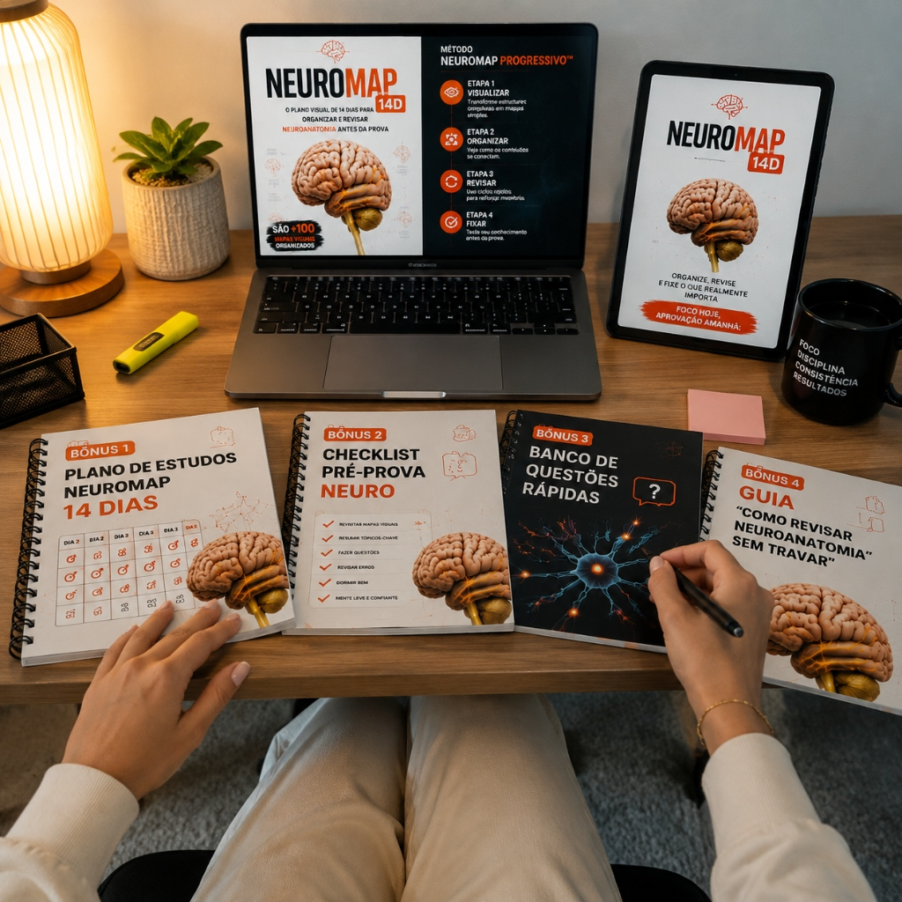

Pare de se perder em Neuroanatomia tentando decorar estruturas soltas que não fazem sentido na sua cabeça.
O NeuroMap transforma uma das matérias mais complexas da área da saúde em mapas visuais organizados, ajudando você a enxergar conexões entre estruturas, funções e regiões do sistema nervoso de forma muito mais simples e fácil de revisar.
 🧠 Quero dominar Neuroanatomia com mapas visuais
🧠 Quero dominar Neuroanatomia com mapas visuais


Veja como a Neuroanatomia fica muito mais simples quando você consegue enxergar as conexões


A diferença entre estudar Neuroanatomia tentando memorizar tudo... e estudar entendendo como as peças se conectam.
- ❌ Informações espalhadas em diferentes capítulos e livros.
- ❌ Muitas estruturas para decorar sem enxergar a relação entre elas.
- ❌ Horas estudando e pouca segurança na hora da prova.
- ❌ Revisões demoradas porque você precisa reconstruir tudo novamente.
- ✅ Uma visão geral organizada dos conteúdos.
- ✅ Mapas que mostram conexões entre estruturas e funções.
- ✅ Revisões mais rápidas e direcionadas.
- ✅ Um método visual para facilitar a compreensão e memorização.
Veja como uma matéria complexa começa a fazer sentido quando ela é organizada visualmente.

Cada mapa visual organiza as informações de forma lógica para ajudar você a:
- ✅ visualizar melhor as estruturas do sistema nervoso;
- ✅ entender a relação entre diferentes regiões;
- ✅ criar associações mais fáceis de lembrar;
- ✅ revisar conteúdos importantes sem precisar voltar em páginas intermináveis.
Você não recebe apenas imagens.
Você recebe uma organização visual criada para transformar uma matéria complexa em uma sequência mais clara para o seu cérebro aprender.
Mais do que mapas: uma forma mais inteligente de organizar sua aprendizagem em Neuroanatomia.
Em vez de encontrar informações espalhadas, você consegue enxergar estruturas, relações e funções em uma única visão.
Tenha um material visual que facilita encontrar os pontos importantes sem precisar reler capítulos inteiros.
Os mapas ajudam seu cérebro a associar informações que antes pareciam desconectadas.
Transforme uma matéria conhecida pela complexidade em uma experiência de aprendizado mais organizada.
- Machado, A. B. M. Neuroanatomia Funcional. Editora Atheneu, 3ª ed.
- Purves, D. Neurociências. Artmed, 6ª ed.
- Haines, D. E. Neuroanatomy: An Atlas of Structures, Sections, and Systems. Wolters Kluwer.
- Fix, J. D. Neuroanatomia. Guanabara Koogan.
- Carpenter, M. B. Trato de Neuroanatomia. Guanabara Koogan.
- Mai, J. K.; Paxinos, G. The Human Nervous System. Academic Press, 3ª ed.
- Kandel, E. R. Principles of Neural Science. McGraw-Hill, 5ª ed.
- Snell, R. S. Neuroanatomia Clínica. Editora Revinter.
- Bear, M. F.; Connors, B. W.; Paradiso, M. A. Neurociências: desvendando o sistema nervoso. Artmed.
- Lent, R. Cem bilhões de neurônios? Atheneu.
🔒 Acesso imediato · Garantia de 30 dias
O NeuroMap foi criado para estudantes que estão cansados de estudar Neuroanatomia por horas e continuar sentindo que as peças não se encaixam.
Você provavelmente vai se identificar se:
Entre milhares de estruturas, nomes e informações, fica difícil entender o que realmente importa.
O NeuroMap organiza a matéria em mapas visuais para você enxergar a lógica antes de decorar os detalhes.
Saber nomes isolados não significa dominar Neuroanatomia.
Com uma visão visual das conexões entre estruturas e funções, o aprendizado fica muito mais intuitivo.
Em vez de reler páginas enormes, você revisa os pontos principais de forma organizada e prática.
Ao acessar o NeuroMap, você recebe uma biblioteca completa para revisar Neuroanatomia
Você recebe:
Não é apenas um resumo de Neuroanatomia.
O NeuroMap é um sistema visual de estudo criado para facilitar a forma como seu cérebro aprende e revisa informações complexas.
Cada mapa foi pensado para organizar conteúdos importantes, mostrar conexões e transformar uma grande quantidade de informações em uma estrutura mais simples de compreender.
Você deixa de apenas tentar memorizar.
Você começa a enxergar como tudo se conecta.
Um roteiro organizado para ajudar você a seguir uma sequência de revisão.

Uma lista prática para acompanhar os conteúdos revisados.

Perguntas rápidas para testar identificação, associação e localização.

Um guia com estratégias para aproveitar melhor mapas visuais.

Uma necessidade comum entre estudantes.
Tenha seu sistema visual de revisão de Neuroanatomia completo.
Você poderia passar horas tentando organizar essas informações sozinho entre livros, anotações e resumos...
Ou pode ter acesso a uma estrutura pronta para direcionar seus estudos.
Para quem quer acelerar seus estudos e ter todos os recursos disponíveis em um único lugar.
Inclui:
- ✅ Mapas visuais organizados de Neuroanatomia.
- ✅ Estruturas apresentadas de forma lógica e conectada.
- ✅ Material desenvolvido para facilitar estudo e revisão.
🔒 Pagamento seguro · Dados protegidos
Você recebe:

- ✓ NeuroMap — Biblioteca Visual de Neuroanatomia
Experimente o NeuroMap sem risco.
Você pode acessar o NeuroMap, analisar os mapas e começar seus estudos.
Se perceber que o material não faz sentido para sua forma de aprender, basta solicitar sua garantia dentro do prazo estabelecido.
Seu investimento estará protegido.
Começar com Garantia →Perguntas frequentes
Você não precisa estudar Neuroanatomia mais difícil.
Você precisa estudar de uma
forma mais inteligente.
Milhares de informações, estruturas e conceitos podem
parecer impossíveis quando estão espalhados.
Mas quando tudo está organizado
visualmente, a compreensão muda.
O NeuroMap foi criado para ajudar você a revisar melhor,
economizar tempo e estudar com mais clareza.
Comece agora sua nova forma de estudar Neuroanatomia.
Começe agora sua revisão visual.
🔒 Pagamento seguro · Acesso imediato · 30 dias de garantia